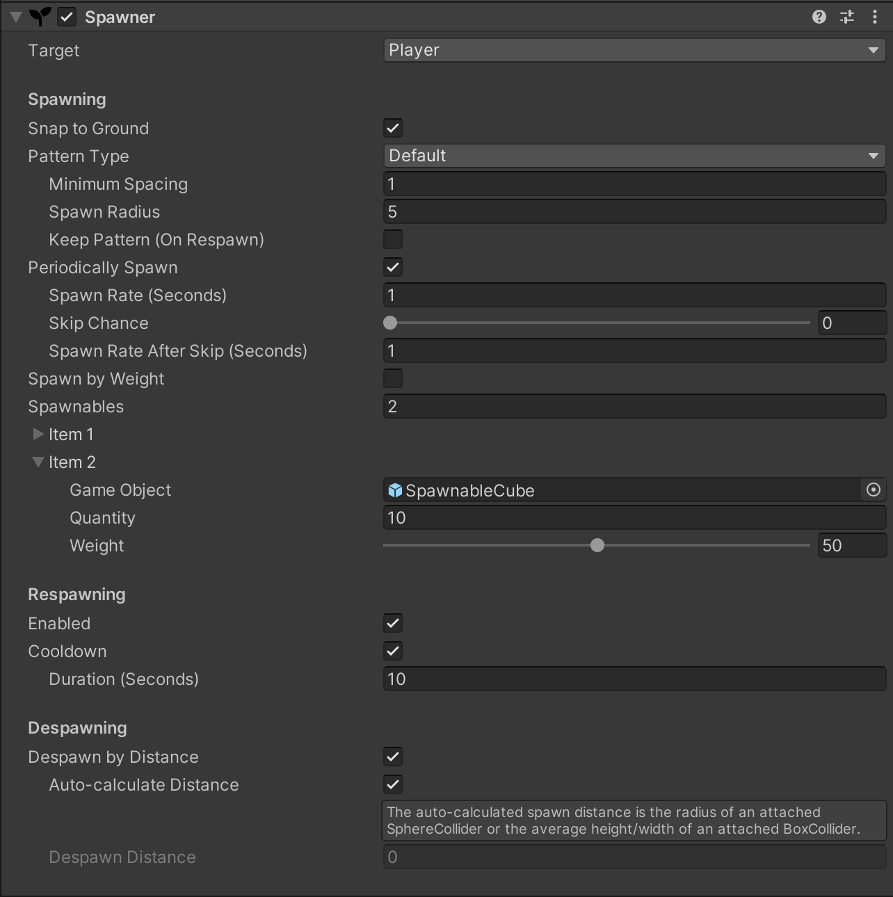
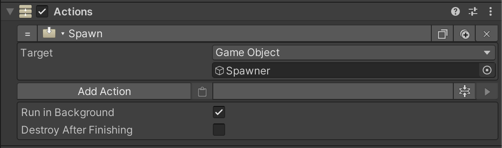
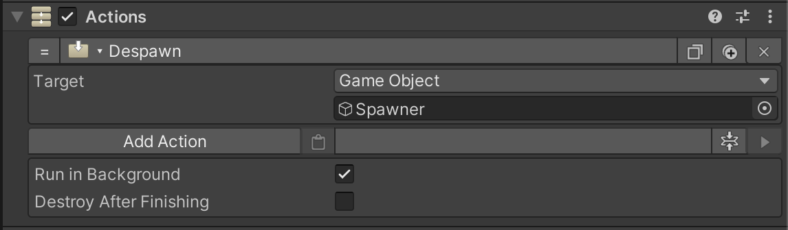

Spawner
A Spawner manages the creation of game objects (often enemies, loot, and visual effects like flames). The Combat module's Spawner component uses object pooling to efficiently manage multiple pools of spawnable objects.
Spawner Component#
A Spawner component can be added to any game object. It has built in support for spawning, despawning, and respawning based on the player's interaction with and proximity from an attached collider. Manual control of the component via Game Creator actions is also supported.

Spawning#
Snap to Ground#
When enabled, the Y position of the spawned object is dynamically set to the ground under the object - effectively "snapping" the object to the terrain below. This prevents objects from being spawned under or above uneven terrain, then hovering out of site or falling (if the spawned object has a rigid body component).
Pattern Type#
Spawning can be done in a variety of patterns, relative to the position of the Spawner:
- Default
- Randomly places spawned objects in a developer designated radius around the Spawner.
- If the number of objects is sufficiently large and the spawn radius is too small/minimum spacing is too large, then objects that do not fit in the spawn area will not be spawned.
- Spiral
- Places spawned objects in a classic spiral pattern, with the center of the spiral originating at the Spawner.
- This pattern is useful for small clusters of objects, like a small group of ~5 enemies.
- Random with Overlap
- Randomly places spawned objects within a developer defined 3 dimensional area around the Spawner.
- The objects may (or may not) overlap, depending on object density in the spawn area size.
- This pattern is useful for spawning visual effects (e.g. flames, dust, etc.).
- At Spawner Origin
- Places all objects exactly at the Spawner's origin.
- This pattern is useful for spawning a single complicated prefab (rather than spawning parts of the prefab as individual spawnable items).
Spawn by Weight#
If enabled, a spawnable is randomly spawned using a simple weight-based selection formula.
For example, if spawnable 1 has a weight of 25 and spawnable 2 has a weight of 100,
spawnable 1 will be spawned 20% of the time and spawnable 2 will be spawned 80% of the time.
Spawnable 1: 25 / (25 + 100) = 20%
Spawnable 2: 100 / (25 + 100) = 80%
Spawnables#
The list of spawnables defines which (and how many) objects are spawned by the Spawner component. If the Spawn by Weight feature is disabled, the spawnables' Weight property is disregarded.
Respawning#
Spawnable objects can be automatically respawned either immediately after the player re-enters the spawn zone or after a developer defined delay.
Enabled#
If enabled, spawned objects will be automatically respawned when the player re-enters the spawn zone.
Cooldown#
If enabled, a respawn will only happen after a specified number of seconds.
Despawning#
Despawn by Distance#
If enabled, spawned objects will be automatically despawned when the player leaves the spawn zone and is a set distance from the closest spawned object.
Auto-calculate Distance#
If enabled, the despawning distance will be automatically computed. The auto-calculated spawn distance is the radius of an attached SphereCollider or the average height/width of an attached BoxCollider.
Despawn Distance#
The distance the player has to travel from the Spawner's origin before the objects are automatically despawned. This property is disregarded if Auto-calculate Distance is enabled.
Game Creator Actions#
A Spawner can be manually controlled with the Spawn and Despawn actions, included with the Combat module.
Any standard Game Creator trigger can be used to invoke these actions.
Spawn Action#
Select an object that has a Spawner component as the actions target.
Disable the Despawn by Distance option when manually controlling the Spawner with triggers/actions, or the objects will never appear to spawn

Despawn Action#
Select an object that has a Spawner component as the actions target.
